| 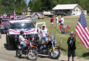 | 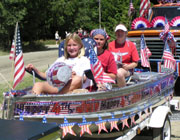 | 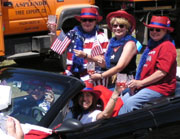 | 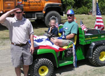 |
| 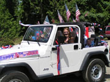 | 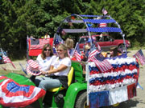 | 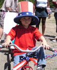 | 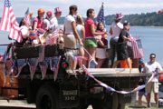 |
| 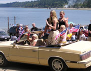 | 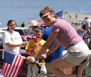 | 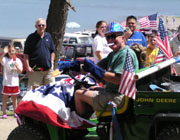 | 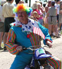 |
| 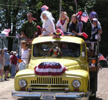 | 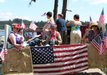 | 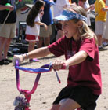 | 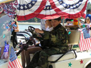 |
| 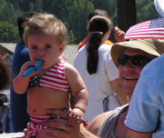 | 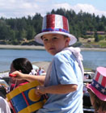 | 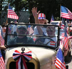 | 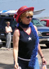 | 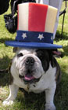 |
| Photos by Doug Kammerer |
| 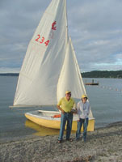 | 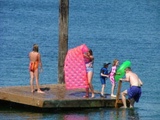 |
| Photos by Terril Chilson |
| Congratulations to George Newcomb and daughter Linda, who won the sailboat race on July 3rd. The new swim raft is very popular, especially with the ladder added by Paul Rohrbach. Thanks to Kris Mullan for donating the swim boundary floats. He and John Farris put the lines together and placed them...looking good. (Click on photos to enlarge). |
| 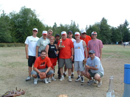 |
| Photo by Nick Huff |
| Victorious WEST Siders pose with their coach, Milt Cutler, after winning the annual Fourth of July baseball game. (Click on photo to enlarge). |
| 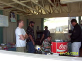 | 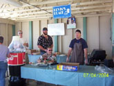 | 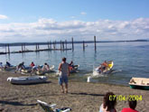 | 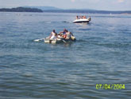 |
| 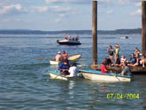 | 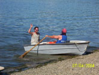 | 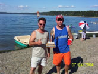 |
| Photos by Carol Tighe |
| Blindman Dinghy race winners were Tom Tighe and Curt Bray. The burgers and brats were a complete sellout. Thanks to the boys - from left to right - Erin, Jay, Nick, and Kevin. (Click on photos to enlarge). |
| 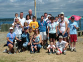 |
| After the fun run. (Click on photo to enlarge). |